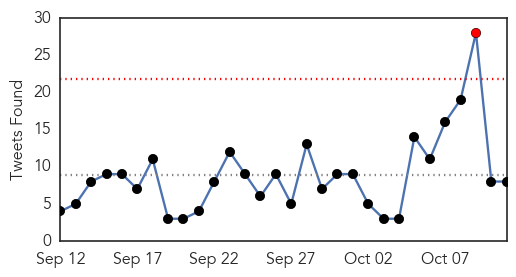
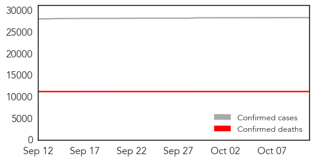

30 Day Trends
Web: 1 alerts, 0 warnings
Twitter: 1 alerts, 0 warnings
6 new deaths (11297 total)
282 new cases (28429 total)
Top Articles:
- 1.000
- Johnson & Johnson Announces Start of Clinical Trial of Ebola Vaccine Regimen in Sierra Leone - Live Trading News
- 1.000
- What Delaware learned from Ebola crisis
- 1.000
- The disease that just will not go away.
- 0.999
- Pauline Cafferkey has Ebola virus reoccurence after meeting UK PM’s wife
- 0.999
- UK nurse hospitalized for Ebola complications
- 0.999
- Ebola Scare: Nigeria Remains Ebola-free- FG
- 0.997
- UCTH releases 15 quarantined Ebola suspects
- 0.996
- Fifteen quarantied people released in Nigeria, after Ebola rumors
- 0.996
- W. Africa travelers allowed through just 5 U.S. airports
- 0.995
- Nurse who contracted Ebola hospitalized
- 0.994
- World Health Organization confirms: Calabar patient ‘did not have Ebola
- 0.993
- First person diagnosed with Ebola in UK back in hospital condition serious
- 0.985
- Scottish nurse previously infected with Ebola readmitted to hospital
- 0.973
- Pauline Cafferkey placed in isolation again over Ebola scare
- 0.965
- Doctors sent home nurse Pauline Cafferkey with ebola FOUR days earlier
- 0.958
- Family of Ebola nurse Pauline Cafferkey say doctors missed 'big opportunity' to spot return of disease
- 0.950
- Family's fury over doctors' treatment of British nurse back in hospital with Ebola
- 0.937
- Ebola case nurse Pauline Cafferkey 'let down by doctors'
- 0.935
- Doctors ‘missed big opportunity’ over Ebola nurse
- 0.934
- Family condemns hospital failures after medics sent Ebola nurse Pauline Cafferkey home
- 0.932
- Nigeria dispels Ebola outbreak
- 0.928
- Clinic treatment of Pauline Cafferkey ‘diabolical’
- 0.928
- Ebola-infected nurse Pauline Cafferkey initially sent home by doctors after falling ill
- 0.925
- Family of Ebola nurse Pauline Cafferkey says she was 'let down'
- 0.899
- Health Care, Slimming Tips, Nutrition, News, Fitness and Lots..........
- 0.879
- Doctors 'failed to spot' Ebola nurse Pauline Cafferkey had fallen ill again
- 0.876
- Nurse in Ebola scare still 'serious'
- 0.747
- Family of Ebola nurse Pauline Cafferkey accuse doctors of 'major failings'
- 0.704
- UK Ahmadiyya Muslim Association Donates 10,000 British Pounds to Fight Ebola in Liberia
- 0.601
- UCTH: Quarantined Staff Released, Test Proves Negative for Ebola, Lassa Fever, Articles
- 0.520
- Ebola nurse met hundreds of East Kilbride pupils
- 0.506
- Survivors must struggle against stigmatisation by a community which blamed them for bringing the disease into their midst
Top Tweets:
- 0.791
- Ebola President: Weak health structures fueled Ebola. READ: http://t.co/uptkhGxp1n TackleEbola
- 0.742
- Ebola's latest victim: The disease that just will not go away. - Blasting News http://t.co/ePUEbz9bqs ebola EVD
- 0.701
- Xpert Ebola test has excellent performance - Healio http://t.co/HAHlMM3TgQ ebola EVD
- 0.701
- UCTH released 15 quarantined suspects following the death of Ebola-stricken ... - Times Gazette http://t.co/VKU9xhcJuU ebola EVD
- 0.649
- Doctors sent home nurse with ebola FOUR days earlier: Pauline Cafferkey's ... - Daily Mail http://t.co/D5CjXTJpKL ebola EVD
- 0.622
- Ebola and Ethnic Clashes Loom as Polls Close in Guinea Election - VICE News http://t.co/Y38ewTxOwV ebola EVD
- 0.543
- What Delaware learned from Ebola crisis - The News Journal http://t.co/ye8wsaJ3e2 ebola EVD
- 0.536
- Family of Ebola nurse Pauline Cafferkey accuse doctors of 'major failings' - The Guardian http://t.co/kBZzS7csbs ebola EVD
Web/News Articles

Tweets
Human Impact
Article Locations

Article Confidences